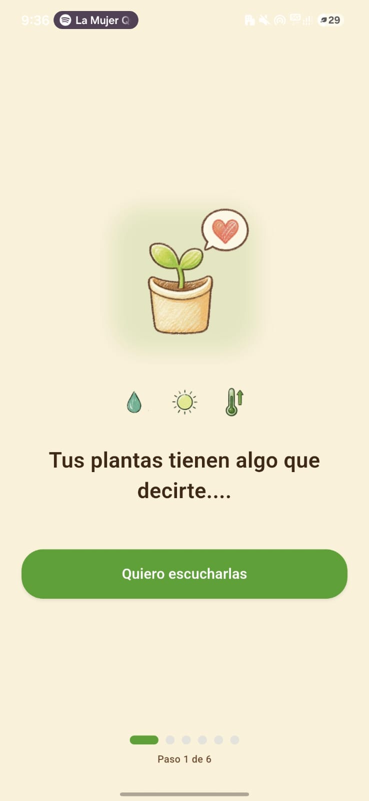

<!DOCTYPE html>
<html lang="es">

<head>
  <meta charset="UTF-8" />
  <meta name="viewport" content="width=device-width, initial-scale=1.0" />
  <title>Cómo funciona — Gossip Garden</title>
  <link rel="icon" type="image/png" href="assets/icons/icon-crayon.png" />
  <link
    href="https://fonts.googleapis.com/css2?family=Caveat:wght@500;600;700&family=Nunito:wght@400;500;600;700;800;900&family=Quicksand:wght@400;500;600;700&display=swap"
    rel="stylesheet" />
  <style>
    *,
    *::before,
    *::after {
      margin: 0;
      padding: 0;
      box-sizing: border-box
    }

    /* NOTE: no `scroll-behavior:smooth` here — it conflicts with GSAP ScrollTrigger scrubbing */

    body {
      background: #FAF1DA;
      color: #3D2817;
      overflow-x: hidden;
      -webkit-font-smoothing: antialiased;
      font-family: 'Quicksand', sans-serif
    }

    body::before {
      content: '';
      position: fixed;
      inset: 0;
      z-index: 0;
      pointer-events: none;
      opacity: .55;
      background-image: url("data:image/svg+xml,%3Csvg width='320' height='320' xmlns='http://www.w3.org/2000/svg'%3E%3Cfilter id='n'%3E%3CfeTurbulence type='fractalNoise' baseFrequency='1.4' numOctaves='4' stitchTiles='stitch' seed='5'/%3E%3CfeColorMatrix values='0 0 0 0 0.55 0 0 0 0 0.38 0 0 0 0 0.18 0 0 0 0.18 0'/%3E%3C/filter%3E%3Crect width='100%25' height='100%25' filter='url(%23n)'/%3E%3C/svg%3E")
    }

    body::after {
      content: '';
      position: fixed;
      inset: 0;
      z-index: 0;
      pointer-events: none;
      opacity: .22;
      background-image: url("data:image/svg+xml,%3Csvg width='400' height='400' xmlns='http://www.w3.org/2000/svg'%3E%3Cfilter id='f'%3E%3CfeTurbulence type='fractalNoise' baseFrequency='0.6' numOctaves='2' stitchTiles='stitch' seed='12'/%3E%3CfeColorMatrix values='0 0 0 0 0.78 0 0 0 0 0.55 0 0 0 0 0.25 0 0 0 0.4 0'/%3E%3C/filter%3E%3Crect width='100%25' height='100%25' filter='url(%23f)'/%3E%3C/svg%3E")
    }

    h1,
    h2,
    h3,
    h4 {
      text-shadow: .5px 0 0 currentColor, -.5px 0 0 currentColor, 0 .4px 0 currentColor, 0 -.4px 0 currentColor;
      letter-spacing: -.3px
    }

    @media(max-width:768px) {
      .gg-nav-d {
        display: none !important
      }

      .gg-nav-m {
        display: block !important
      }
    }

    @media(min-width:769px) {
      .gg-nav-m {
        display: none !important
      }
    }

    .gg-navlink{color:#3D2817;transition:color .2s ease,transform .2s ease}
    .gg-navlink:hover{transform:translateY(-1px)}
    .gg-ul{position:absolute;left:0;right:0;bottom:-3px;width:100%;height:11px;overflow:visible;pointer-events:none}
    .gg-ul path{stroke-dasharray:240;stroke-dashoffset:240;transition:stroke-dashoffset .55s cubic-bezier(.4,0,.2,1)}
    .gg-navlink:hover .gg-ul path{stroke-dashoffset:0}
    .gg-navlink.is-active .gg-ul path{stroke-dashoffset:0}
    .gg-nav-d:hover .gg-navlink.is-active .gg-ul path{stroke-dashoffset:240}
    .gg-nav-d:hover .gg-navlink.is-active:hover .gg-ul path{stroke-dashoffset:0;animation:ggDraw .6s cubic-bezier(.4,0,.2,1)}
    @keyframes ggDraw{from{stroke-dashoffset:240}to{stroke-dashoffset:0}}

    ::-webkit-scrollbar {
      width: 8px
    }

    ::-webkit-scrollbar-track {
      background: #FAF1DA
    }

    ::-webkit-scrollbar-thumb {
      background: #C68A40;
      border-radius: 4px
    }

    #root>div {
      position: relative;
      z-index: 2
    }

    img { user-select: none; -webkit-user-drag: none; }

    @keyframes floatUp {
      0%, 100% { transform: translateY(0) }
      50% { transform: translateY(-10px) }
    }

    /* ── Journey / camino ── */
    .gg-journey { position: relative; max-width: 1000px; margin: 0 auto; }

    .gg-trail {
      position: absolute; top: 0; bottom: 0; left: 50%;
      transform: translateX(-50%); width: 150px;
      pointer-events: none; z-index: 0;
    }

    .gg-jstep {
      position: relative;
      display: grid; grid-template-columns: 1fr 1fr;
      gap: clamp(24px, 5vw, 76px); align-items: center;
      padding: clamp(18px, 3.5vw, 38px) 0;
    }
    .gg-jtext { order: 1; }
    .gg-phone-wrap { order: 2; }
    .gg-jstep.is-flip .gg-jtext { order: 2; }
    .gg-jstep.is-flip .gg-phone-wrap { order: 1; }

    .gg-jnode {
      position: absolute; left: 50%; top: 50%;
      transform: translate(-50%, -50%); z-index: 3;
    }

    @media(max-width: 760px) {
      .gg-trail { left: 28px; transform: none; width: 64px; }
      .gg-jstep { grid-template-columns: 1fr; gap: 18px; padding-left: 66px; }
      .gg-jstep .gg-jtext, .gg-jstep.is-flip .gg-jtext { order: 2; text-align: left; }
      .gg-jstep .gg-phone-wrap, .gg-jstep.is-flip .gg-phone-wrap { order: 1; justify-content: flex-start; }
      .gg-jnode { left: 28px; }
    }
  </style>

  <script src="https://unpkg.com/react@18.3.1/umd/react.development.js"
    integrity="sha384-hD6/rw4ppMLGNu3tX5cjIb+uRZ7UkRJ6BPkLpg4hAu/6onKUg4lLsHAs9EBPT82L"
    crossorigin="anonymous"></script>
  <script src="https://unpkg.com/react-dom@18.3.1/umd/react-dom.development.js"
    integrity="sha384-u6aeetuaXnQ38mYT8rp6sbXaQe3NL9t+IBXmnYxwkUI2Hw4bsp2Wvmx4yRQF1uAm"
    crossorigin="anonymous"></script>
  <script src="https://unpkg.com/@babel/standalone@7.29.0/babel.min.js"
    integrity="sha384-m08KidiNqLdpJqLq95G/LEi8Qvjl/xUYll3QILypMoQ65QorJ9Lvtp2RXYGBFj1y"
    crossorigin="anonymous"></script>

  <!-- GSAP + ScrollTrigger: dibuja el camino y revela los pasos al hacer scroll -->
  <script src="https://cdn.jsdelivr.net/npm/gsap@3.13.0/dist/gsap.min.js"></script>
  <script src="https://cdn.jsdelivr.net/npm/gsap@3.13.0/dist/ScrollTrigger.min.js"></script>
</head>

<body>
  <div id="root"></div>
  <script type="text/babel" src="components/crayon-v3.jsx"></script>
  <script type="text/babel" src="components/sections-v3.jsx?v=20260625k"></script>
  <script type="text/babel">
    const t = { hf: 'Quicksand', bf: 'Nunito' };
    const P = window.PALETTE;

    const PageNav = ({ active }) => {
      const [s, setS] = React.useState(false);
      const [o, setO] = React.useState(false);
      React.useEffect(() => {
        const h = () => setS(window.scrollY > 40);
        window.addEventListener('scroll', h, { passive: true });
        return () => window.removeEventListener('scroll', h);
      }, []);
      const links = [
        { l: 'Inicio', href: 'index.html' },
        { l: 'Cómo funciona', href: 'how-it-works.html' },
        { l: 'Personalidades', href: 'personalities.html' },
        { l: 'Tienda', href: 'store.html' },
      ];
      return (
        <nav style={{
          position: 'fixed', top: 0, left: 0, right: 0, zIndex: 100, height: 72,
          display: 'flex', alignItems: 'center', justifyContent: 'space-between', padding: '0 clamp(16px,4vw,48px)',
          background: s ? 'rgba(250,241,218,0.92)' : 'rgba(250,241,218,0.6)', backdropFilter: 'blur(10px)', transition: 'all 0.3s'
        }}>
          <a href="index.html" style={{ display: 'flex', alignItems: 'center', gap: 10, textDecoration: 'none' }}>
            
            <span style={{ fontFamily: t.hf, fontWeight: 800, fontSize: 19, color: P.ink, lineHeight: 1, filter: 'url(#cr-text)' }}>Gossip<br />Garden</span>
          </a>
          <div className="gg-nav-d" style={{ display: 'flex', alignItems: 'center', gap: 24 }}>
            {links.map(({ l, href }) => l === 'Tienda'
              ? <a key={l} href={href} style={{ textDecoration: 'none' }}><CrayonButton fill={P.heart} stroke={P.ink} color={P.cream}>Tienda</CrayonButton></a>
              : (
              <a key={l} href={href} className={l === active ? 'gg-navlink is-active' : 'gg-navlink'} style={{ textDecoration: 'none', fontSize: 14, fontWeight: 600, fontFamily: t.bf, position: 'relative', padding: '4px 2px 6px' }}>
                {l}
                <svg className="gg-ul" viewBox="0 0 200 14" preserveAspectRatio="none"><path d="M3,8 Q40,2 90,9 T196,5" fill="none" stroke={P.leafDk} strokeWidth="3" strokeLinecap="round" filter="url(#cr)" /></svg>
              </a>
            ))}
          </div>
          <button className="gg-nav-m" onClick={() => setO(!o)} style={{ display: 'none', background: 'none', border: 'none', fontSize: 24, cursor: 'pointer', color: P.ink }}>{o ? '×' : '≡'}</button>
          {o && <div style={{ position: 'absolute', top: 72, left: 0, right: 0, background: 'rgba(250,241,218,0.98)', padding: 24, display: 'flex', flexDirection: 'column', gap: 18, borderBottom: `2px solid ${P.ink}33` }}>
            {links.map(({ l, href }) => <a key={l} href={href} onClick={() => setO(false)} style={{ color: P.ink, textDecoration: 'none', fontSize: 18, fontWeight: 600, fontFamily: t.bf }}>{l}</a>)}
          </div>}
        </nav>
      );
    };

    /* ── Phone mockup with a real onboarding screenshot inside ── */
    const PhoneFrame = ({ src, alt, tint, size = '188px' }) => (
      <div className="gg-phone-wrap" style={{ position: 'relative', display: 'flex', justifyContent: 'center' }}>
        <div aria-hidden="true" style={{
          position: 'absolute', inset: '-10% -16%', zIndex: 0,
          background: tint, opacity: 0.55,
          borderRadius: '46% 54% 52% 48% / 50% 44% 56% 50%',
          filter: 'blur(3px)'
        }} />
        <div style={{
          position: 'relative', zIndex: 1,
          width: `clamp(168px, 18vw, ${size})`, aspectRatio: '9 / 16',
          background: P.ink, borderRadius: 30, padding: 7,
          boxShadow: '0 18px 38px rgba(61,40,23,0.28)'
        }}>
          <div style={{ position: 'absolute', top: 10, left: '50%', transform: 'translateX(-50%)', width: 44, height: 6, borderRadius: 5, background: '#000', opacity: 0.5, zIndex: 2 }} />
          
        </div>
      </div>
    );

    /* ── A node bubble sitting on the trail ── */
    const TrailNode = ({ num, color }) => (
      <div className="gg-jnode">
        <div style={{ position: 'relative', width: 58, height: 58 }}>
          <svg width="58" height="58" viewBox="0 0 58 58" style={{ position: 'absolute', inset: 0, overflow: 'visible' }}>
            <circle cx="29" cy="29" r="24" fill={color} stroke={P.ink} strokeWidth="2.6" filter="url(#cr)" />
          </svg>
          <span style={{
            position: 'absolute', inset: 0, display: 'flex', alignItems: 'center', justifyContent: 'center',
            fontFamily: t.hf, fontWeight: 900, fontSize: 20, color: P.ink
          }}>{num}</span>
        </div>
      </div>
    );

    /* ── One step of the journey ── */
    const JourneyStep = ({ num, color, kicker, title, body, img, flip }) => (
      <div className={'gg-jstep' + (flip ? ' is-flip' : '')}>
        <div className="gg-jtext" style={{ padding: flip ? '0 0 0 clamp(8px,3vw,40px)' : '0 clamp(8px,3vw,40px) 0 0', textAlign: flip ? 'left' : 'right' }}>
          <div style={{ fontFamily: t.bf, fontSize: 11, fontWeight: 800, letterSpacing: '2.5px', color: P.leafDk, marginBottom: 8, textTransform: 'uppercase' }}>
            Paso {num} · {kicker}
          </div>
          <h3 style={{ fontFamily: t.hf, fontWeight: 800, fontSize: 'clamp(22px,2.7vw,32px)', color: P.ink, lineHeight: 1.1, marginBottom: 12 }}>{title}</h3>
          <p style={{ fontFamily: t.bf, fontSize: 'clamp(14px,1.35vw,16px)', color: P.inkSoft, lineHeight: 1.65, maxWidth: 380, marginLeft: flip ? 0 : 'auto' }}>{body}</p>
        </div>

        <PhoneFrame src={img} alt={title} tint={`${color}55`} />

        <TrailNode num={num} color={color} />
      </div>
    );

    /* ── The whole scroll-driven journey (camino) ── */
    const Journey = () => {
      const rootRef = React.useRef(null);

      const steps = [
        { num: '01', color: P.leaf, kicker: 'Bienvenida', title: 'Crea tu cuenta', img: 'assets/onboarding/login.jpeg', body: 'Entra con tu correo o con Google y empieza a ver qué murmuran tus plantas. Tu jardín digital queda listo en segundos.' },
        { num: '02', color: P.pot, kicker: 'Primeros pasos', title: 'Tu jardín te espera', img: 'assets/onboarding/jardin.jpeg', body: 'Elige cómo empezar: con sensor para datos en vivo, o sin sensor si aún no lo tienes. La app te lleva de la mano paso a paso.' },
        { num: '03', color: P.heart, kicker: 'Agrega tu planta', title: '¿Cómo la identificamos?', img: 'assets/onboarding/identificar.jpeg', body: 'Reconócela con la cámara o búscala por nombre en el catálogo. Tú eliges el método que te resulte más cómodo.' },
        { num: '04', color: '#8FBEEE', kicker: 'Magia con IA', title: 'Apunta y reconoce', img: 'assets/onboarding/camara.jpeg', body: 'Toma una foto y la IA identifica tu especie al instante. Le asignamos sus cuidados ideales y una personalidad propia.' },
        { num: '05', color: P.leafDk, kicker: 'Tu colección', title: 'Tu jardín cobra vida', img: 'assets/onboarding/coleccion.jpeg', body: 'Sigue el estado de cada planta, sus logros y sus mensajes. Comparte tu jardín y presume tu pulgar verde.' },
      ];

      React.useEffect(() => {
        const gsap = window.gsap, ST = window.ScrollTrigger;
        const root = rootRef.current;
        if (!gsap || !ST || !root) return; // sin GSAP, todo queda visible por defecto

        gsap.registerPlugin(ST);
        const reduce = window.matchMedia('(prefers-reduced-motion: reduce)').matches;

        const ctx = gsap.context(() => {
          if (reduce) return; // respeta "menos movimiento": deja todo visible

          // El camino se dibuja a medida que bajas (scrub)
          const path = root.querySelector('.gg-trail-path');
          if (path) {
            gsap.fromTo(path, { strokeDashoffset: 1 }, {
              strokeDashoffset: 0, ease: 'none',
              scrollTrigger: { trigger: root, start: 'top 72%', end: 'bottom 62%', scrub: 0.6 }
            });
          }

          // Cada paso entra: teléfono desde su lado, texto sube, nodo "pop"
          root.querySelectorAll('.gg-jstep').forEach((step) => {
            const flip = step.classList.contains('is-flip');
            const phone = step.querySelector('.gg-phone-wrap');
            const text = step.querySelector('.gg-jtext');
            const node = step.querySelector('.gg-jnode');

            if (phone) gsap.from(phone, {
              autoAlpha: 0, x: flip ? -70 : 70, rotate: flip ? -4 : 4,
              duration: 0.85, ease: 'power3.out',
              scrollTrigger: { trigger: step, start: 'top 80%' }
            });
            if (text) gsap.from(text, {
              autoAlpha: 0, y: 36, duration: 0.7, ease: 'power3.out',
              scrollTrigger: { trigger: step, start: 'top 78%' }
            });
            if (node) gsap.from(node, {
              scale: 0, autoAlpha: 0, duration: 0.5, ease: 'back.out(2)',
              scrollTrigger: { trigger: step, start: 'top 74%' }
            });
          });
        }, root);

        // Recalcular posiciones cuando carguen las imágenes (afectan la altura)
        const imgs = Array.from(root.querySelectorAll('img'));
        let pending = imgs.length;
        const done = () => { if (--pending <= 0) ST.refresh(); };
        if (pending === 0) ST.refresh();
        imgs.forEach((im) => {
          if (im.complete) done();
          else { im.addEventListener('load', done); im.addEventListener('error', done); }
        });
        const tmo = setTimeout(() => ST.refresh(), 700);

        return () => { clearTimeout(tmo); ctx.revert(); };
      }, []);

      return (
        <section style={{ padding: '10px clamp(20px,5vw,80px) 70px' }}>
          <div className="gg-journey" ref={rootRef}>
            {/* Camino vertical — se dibuja con el scroll (fallback: visible) */}
            <div className="gg-trail" aria-hidden="true">
              <svg width="100%" height="100%" viewBox="0 0 100 1000" preserveAspectRatio="none" style={{ overflow: 'visible' }}>
                <path className="gg-trail-path"
                  d="M50,0 C88,80 12,168 50,255 C88,342 12,430 50,512 C88,594 12,682 50,765 C88,848 12,930 50,1000"
                  fill="none" stroke={P.leafDk} strokeWidth="4"
                  strokeLinecap="round"
                  vectorEffect="non-scaling-stroke"
                  pathLength="1"
                  style={{ strokeDasharray: 1, strokeDashoffset: 0 }}
                  filter="url(#cr)" />
              </svg>
            </div>

            {steps.map((s, i) => (
              <JourneyStep key={i} {...s} flip={i % 2 === 1} />
            ))}
          </div>
        </section>
      );
    };

    const App = () => (
      <div style={{ fontFamily: t.bf, position: 'relative' }}>
        <CrayonDefs />
        <PageNav active="Cómo funciona" />

        {/* Hero */}
        <section style={{ padding: '116px clamp(20px,5vw,80px) 30px', textAlign: 'center' }}>
          <Reveal>
            <div style={{ fontFamily: t.bf, fontSize: 13, fontWeight: 700, letterSpacing: '2px', color: P.leafDk, marginBottom: 14 }}>DE LA SEMILLA A LA CONVERSACIÓN</div>
            <h1 style={{ fontFamily: t.hf, fontSize: 'clamp(36px,6vw,68px)', fontWeight: 900, color: P.ink, lineHeight: 1.04, filter: 'url(#cr-text)' }}>
              Cómo funciona
            </h1>
            <div style={{ display: 'flex', justifyContent: 'center', marginTop: 10 }}>
              <CrayonUnderline color={P.leafDk} w="260px" delay={300} h={6} />
            </div>
            <p style={{ fontFamily: t.bf, fontSize: 'clamp(15px,1.5vw,18px)', color: P.inkSoft, marginTop: 20, maxWidth: 540, marginLeft: 'auto', marginRight: 'auto', lineHeight: 1.6 }}>
              Un paseo por la app, paso a paso: crea tu cuenta, agrega tus plantas y empieza a escuchar lo que tienen para decirte.
            </p>
          </Reveal>

          <Reveal delay={200}>
            <div style={{ display: 'flex', justifyContent: 'center', marginTop: 44 }}>
              <div style={{ position: 'relative', width: 'clamp(190px,24vw,220px)' }}>
                <svg aria-hidden="true" viewBox="0 0 100 100" preserveAspectRatio="xMidYMid meet"
                  style={{ position: 'absolute', top: '52%', left: '50%', transform: 'translate(-50%,-50%)', width: '170%', aspectRatio: '1 / 1', height: 'auto', zIndex: 0, overflow: 'visible' }}>
                  <circle cx="50" cy="50" r="45" fill={`${P.leaf}22`} stroke={P.ink} strokeWidth="2.4" vectorEffect="non-scaling-stroke" filter="url(#cr)" />
                </svg>
                <div style={{ position: 'relative', zIndex: 1, animation: 'floatUp 5s ease-in-out infinite' }}>
                  <div style={{
                    width: '100%', aspectRatio: '9 / 16', background: P.ink, borderRadius: 32, padding: 8,
                    boxShadow: '0 20px 42px rgba(61,40,23,0.30)', maxWidth: 240, margin: '0 auto', position: 'relative'
                  }}>
                    <div style={{ position: 'absolute', top: 11, left: '50%', transform: 'translateX(-50%)', width: 48, height: 7, borderRadius: 5, background: '#000', opacity: 0.5, zIndex: 2 }} />
                    
                  </div>
                </div>
                {/* estrellitas decorativas */}
                <svg style={{ position: 'absolute', top: '4%', right: '-2%', overflow: 'visible', zIndex: 2 }} width="26" height="26" viewBox="0 0 24 24">
                  <path d="M12,2 L13.5,9 L20,12 L13.5,15 L12,22 L10.5,15 L4,12 L10.5,9 Z" fill={P.pot} stroke={P.ink} strokeWidth="1.5" filter="url(#cr)" />
                </svg>
                <svg style={{ position: 'absolute', bottom: '8%', left: '-4%', overflow: 'visible', zIndex: 2 }} width="20" height="20" viewBox="0 0 24 24">
                  <path d="M12,2 L13.5,9 L20,12 L13.5,15 L12,22 L10.5,15 L4,12 L10.5,9 Z" fill={P.heart} stroke={P.ink} strokeWidth="1.5" filter="url(#cr)" />
                </svg>
              </div>
            </div>
          </Reveal>
        </section>

        {/* Journey / camino */}
        <Journey />

        {/* CTA */}
        <section style={{ padding: '0 clamp(20px,5vw,80px) 80px', textAlign: 'center' }}>
          <Reveal>
            <CrayonCard fill={`${P.heart}25`} stroke={P.ink} sw={3} radius={28} padding={40} style={{ maxWidth: 680, margin: '0 auto' }}>
              <div style={{ fontFamily: t.bf, fontSize: 13, fontWeight: 700, letterSpacing: '2px', color: P.heart, marginBottom: 10 }}>¿LISTA?</div>
              <h2 style={{ fontFamily: t.hf, fontSize: 'clamp(26px,3.5vw,40px)', fontWeight: 800, color: P.ink, marginBottom: 8 }}>Conoce a tu próxima amiga.</h2>
              <div style={{ display: 'flex', justifyContent: 'center' }}>
                <CrayonUnderline color={P.heart} w="180px" delay={200} h={4} />
              </div>
              <p style={{ fontFamily: t.bf, fontSize: 15, color: P.inkSoft, marginTop: 14, lineHeight: 1.5 }}>
                Elige tu personalidad en la tienda y recíbela en casa.
              </p>
              <div style={{ display: 'flex', gap: 14, justifyContent: 'center', marginTop: 24, flexWrap: 'wrap' }}>
                <a href="personalities.html" style={{ textDecoration: 'none' }}><CrayonButton fill={P.leafDk} stroke={P.ink} color={P.cream}>Ver personalidades</CrayonButton></a>
                <a href="store.html" style={{ textDecoration: 'none' }}><CrayonButton fill={P.heart} stroke={P.ink} color={P.cream}>Ir a la tienda</CrayonButton></a>
              </div>
            </CrayonCard>
          </Reveal>
        </section>

        <Footer t={t} />
      </div>
    );
    ReactDOM.createRoot(document.getElementById('root')).render(<App />);
  </script>
</body>

</html>
